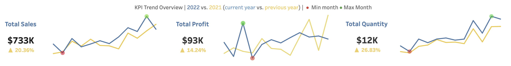
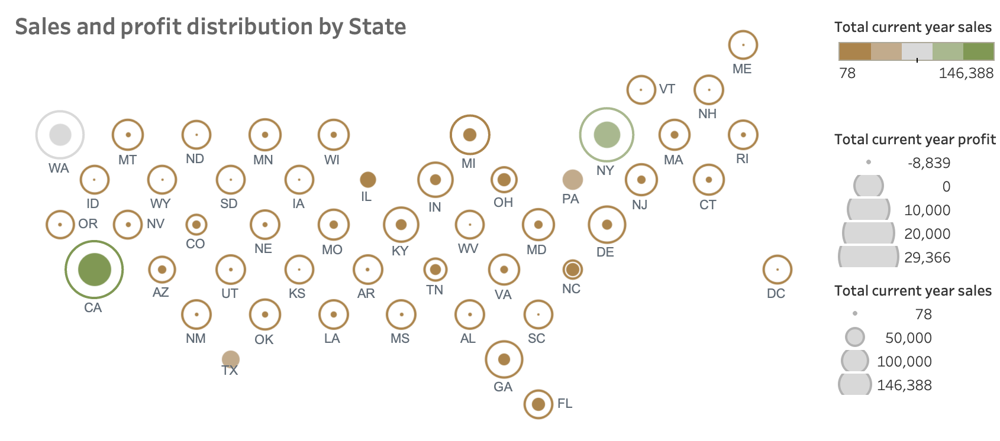
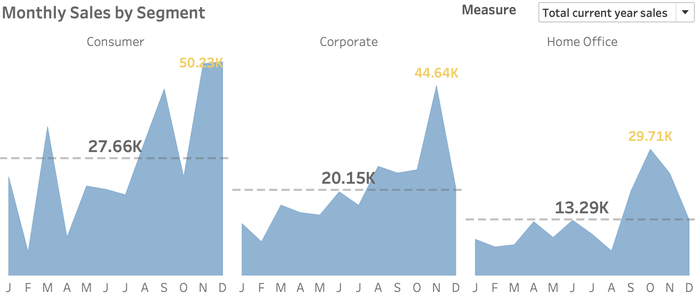
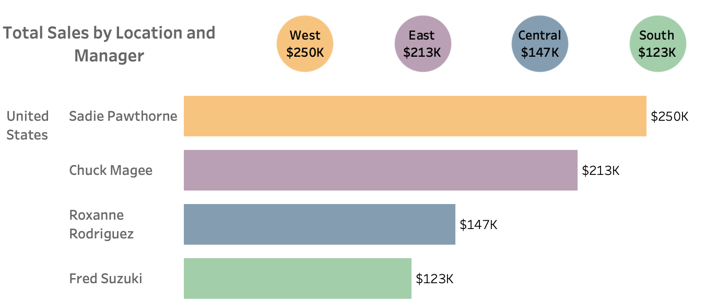
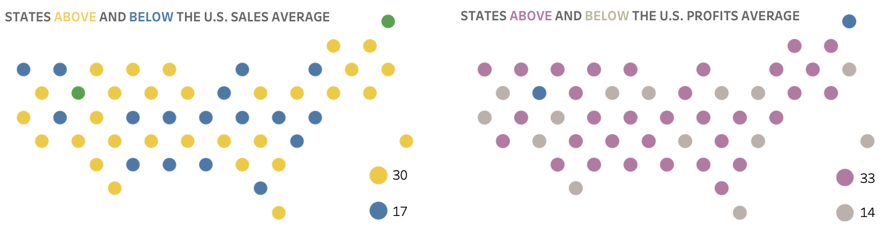
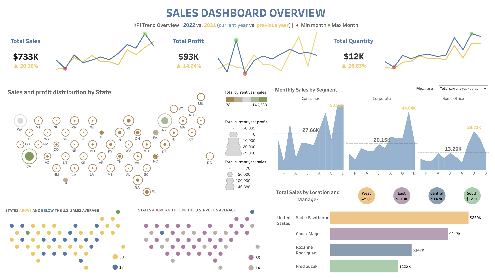

Project Overview
Developed a Sales Dashboard using Tableau to visualize key performance indicators, sales trends, and profit distribution across different states, improving data-driven decision-making for management.
- Category: Data Analytics
- Tech Stack: Tableau, Python, Excel
- Tableau Public Link: Sales Dashboard
Sales Dashboard
Introduction
In today’s data-driven world, businesses rely heavily on visual insights to make informed decisions. I built a Sales Dashboard that provides a comprehensive view of sales performance across various regions, product categories, and customer segments. This dashboard allows users to quickly assess key metrics like sales, profit, and discount patterns. Let’s walk through how this dashboard was created and the significance of each visualization.
Understanding the Dataset
The dataset contains sales data from different regions and includes various columns such as:
- Order information: Order ID, Order Date, Ship Date
- Customer information: Customer ID, Customer Name, Segment
- Product information: Product ID, Category, Sub-Category, Product Name
- Sales metrics: Sales, Quantity, Discount, Profit
Setting Up the Dashboard Framework
I used Tableau to create the dashboard. The first step was to connect my dataset to Tableau and start by structuring the layout. My goal was to create a dashboard that not only displays information clearly but also allows users to interact with it. I planned for five main visualizations:
- Key Performance Indicator (KPI) trends
- Sales and Profit Distribution by State
- Monthly Sales by Segment
- Total Sales by Location and Manager
- States Above and Below U.S. Sales/Profits Average
Key Performance Indicator (KPI) trends
At the heart of any effective dashboard is its ability to provide immediate, actionable insights. With this in mind, the KPI Trend Overview takes center stage. Total Sales, Total Profit, and Total Quantity are displayed as line graphs, comparing the current year (2022) with the previous year (2021). This year-over-year comparison is crucial – it not only shows current performance but also provides context. The stark visual contrast between the two years tells this story at a glance, revealing growth or decline trends.

Sales and Profit Distribution by State
The geographical aspect of sales data is addressed through a United States map showing sales and profit distribution by state. A choropleth map was chosen, where color intensity represents sales volume, and circle size indicates profit. This dual-layer approach allows viewers to quickly identify high-performing states and potential areas for improvement. It's fascinating to see how some states might have high sales but lower profits, prompting questions about pricing strategies or operational costs in those areas. 
Monthly Sales by Segment
Understanding customer segments is the next piece of the puzzle. The Monthly Sales by Segment chart breaks down sales trends for Consumer, Corporate, and Home Office segments. Multi-series line charts are used for this, with a distinct color assigned to each segment. This visualization is particularly valuable as it reveals not just which segment is driving sales, but how purchasing behaviors fluctuate over time. The clear dominance of the Consumer segment, for instance, might inform marketing strategies or product development priorities. 
Total Sales by Location and Manager
To give credit where it's due and understand regional performance, the Total Sales by Location and Manager chart was created. This bar chart does double duty – it shows both individual manager performance and regional totals. The color-coding by region within each manager's bar creates a layered story, allowing viewers to assess both personal and regional contributions to the overall sales picture. 
States Above and Below U.S. Sales/Profits Average
One of the more nuanced visualizations included is the pair of maps showing states above and below the U.S. sales and profits average. These maps use color-coding to differentiate states based on their performance relative to the national average. States performing above average are represented in one color, while those below average are shown in another. This visual representation serves as a quick reference for identifying geographical patterns in performance. It allows for an immediate grasp of which regions are excelling and which may need additional support or strategy adjustments. 
Insights
Looking at the finished dashboard, several key insights jump out. The total sales of $733K represent a healthy 20.36% increase from the previous year – a clear sign of growth. The West region, under Sadie Pawthorne's management, stands out as the top performer with $250K in sales. And the consistent dominance of the Consumer segment across months provides valuable direction for business strategy.
